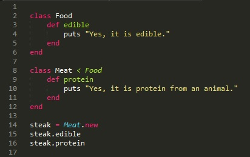
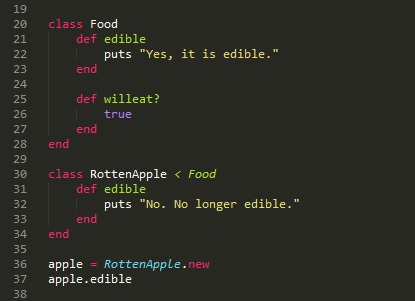
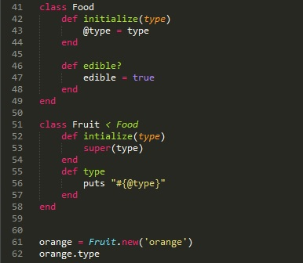
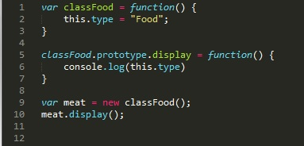

Inheritance refers to a relationship between two classes. Ruby is a language that doesn't support multiple inheritance (a feature that allows classes to inherit 'stuff' from multiple classes). A class can inherit from a different class that in turn inherits from a third class, but a single class cannot inherit directly from many different classes.
The class that is higher up on the hierarchy (the one who's features are being inherited) is called a super-class or a parent class. The class that is lower on the hierarchy (the classes doing the inheritance) is called the subclass or a child class.
We can think of a parent class as a broad category, like food. It describes a lot of different kinds of things and encompasses many different subcategories. All those subcategories might have a common trait (in the case of the subcategories under the umbrella of food, a common trait would be that it is edible).
That code will put:
Yes, it is edible.
Yes, it is protein from an animal.
However, sometimes, all the traits from the parent class shouldn't be applied to the child class. In this case, it is possible to override those features with more applicable features in a child class.
That code will put:
No. No longer edible.
What about instance variables? How does inheritance work on those? All Ruby objects have instance variables. These instance variabeles are not defined by their object's class. They are created when a value is assigned to them. Therefore, instance variables are not related to the way variables and features are inherited in Ruby.
Although, it can look like instance variables are inherited, this is usually a result of the fact that the methods (which assign values to those instance variables) are inherited.
That code will put:
orange
In the above code, we put super into the Fruit class's initialize method. super takes the arguments it is given sends those arguments to the method of the same name in the parent of the object invoking super. As you can see above, super is called with one argument; type. So Ruby goes to the parent of the current object (the Fruit class) and invokes the method of the same name (initialize) with the argument(s) passed through super (in this case the type, 'orange'.)
If we were to use an instance variable named @type in both the parent class (Food) and the child class (Fruit), the instance variable (@type) in the child class (Fruit) would overwrite the value given to that instance variable in the parent class (Food).
JavaScript, in contrast to Ruby, has no classes. Instead, in JavaScript every object can be used as a 'prototype' for another object. The prototype defines the functions and members that the object derived from that prototype can use.
In the above image, all we've done is create classFood, given it a type property with a value 'edible', and added a display function to classFood that prints the type to the console. Then we've created an instance of classFood and set it equal to a new variable meat before calling the display function on meat.
So what does that .prototype bit of code do?
Well every JavaScript function has a prototype property that is empty by default. Properties and methods can be attached to this prototype property in order to implement inheritance. In the above code, we're attaching .display to the prototype property of classFood.
In the above code, we've established a new function classFruit that has a type property ('Fruit') and a name property ('Orange'). Then in line 20, we set classFruit (the child) to inherit from classFood (the parent).
Line 22 creates a new instance of classFruit. Despite the fact that we've never explictly set a display function for classFruit, we can (as seen on line 23) use display to print the type property of 'apple'.